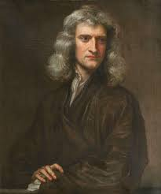

<!DOCTYPE html>
<html lang="en">
<head>
    <meta charset="UTF-8">
    <meta name="viewport" content="width=device-width, initial-scale=1.0">
    <title>Document</title>
    <script src="https://unpkg.com/react@18/umd/react.development.js" crossorigin></script>
    <script src="https://unpkg.com/react-dom@18/umd/react-dom.development.js" crossorigin></script>
    <script src="https://unpkg.com/@babel/standalone/babel.min.js"></script>
    <link href ="placeholder.css" rel="stylesheet">
    
</head>
<body>
    <div id="mydiv"></div>

    <script type="text/babel">

        const myhead = {
         textAlign: "center",
         padding : 10,
         backgroundColor:"rgb(230, 204, 170)"
        };

        const myImg = {
        textAlign: "center",
        padding : "10px",
        margin : "auto",
        width : "80%",
        backgroundColor:"rgb(225, 225, 225)"
        };

        const mybody = {
        padding : "10px",
        margin : "auto",
        width : "50%",
        backgroundColor:"rgb(230, 204, 170)"
        }


     function Header(){
        return(
            <div className="myhead">
                <h1 className="headText">Isaac Newton</h1>
                <blockquote style={{fontStyle:"italic"}}>"If I have seen further, it is by standing on the shoulders of giants," </blockquote>
            </div>);
     }
     function Image(){
         return(
            <div className="myImg">
                
                <p style={{fontSize:"1.2em"}} >Picture of isaac newton</p>
            </div>
         )
     }

     function Body(){
        return(
            <div className="mybody">
                <h3 style={{fontWeight:"600",marginLeft:"90px"}}> Life of Issac Newton</h3>
                <ul>
                    <li><span className="bold">1642</span> Born December 25th</li>
                    <li><span className="bold">1661</span> Admitted to trinity college Cambridge</li>
                    <li><span className="bold">1665</span> Discovered the generalized binomal theory and began to develop calculus</li>
                    <li><span className="bold">1666</span> observed the spectrum of colours exsiting in a prism</li>
                    <li><span className="bold">1668</span> produced the first reflecting telescope</li>
                    <li><span className="bold">1670</span> he investigated the refraction of light </li>
                    <li><span className="bold">1672</span> Elected a fellow of the royal society </li>
                    <li><span className="bold">1696</span> took up the post as warden of the royal mint  </li>
                    <li><span className="bold">1703</span> made president of the royal society</li>
                    <li><span className="bold">1727</span> died march 20th</li>
                </ul>
            </div>
        )

     }
      function Page() {
        return(
            <div>
                <Header />
                <Image />
                <Body />
            </div>
        )
      };

      const root = ReactDOM.createRoot(document.getElementById('mydiv'));
      root.render(<Page />)
    </script>
    
</body>
</html>
